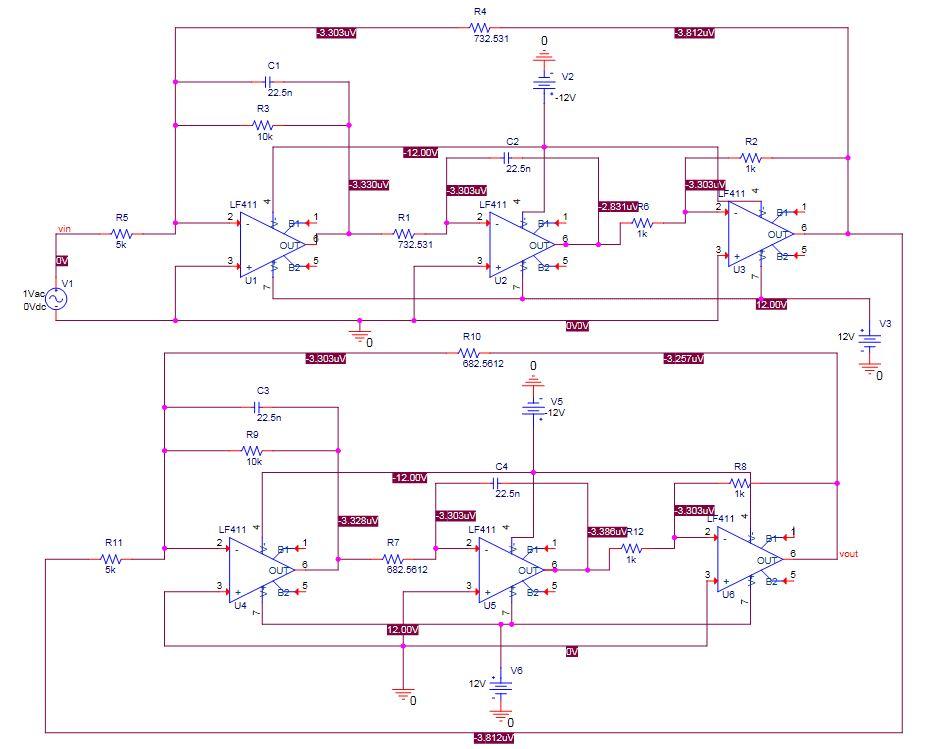
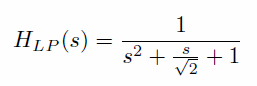
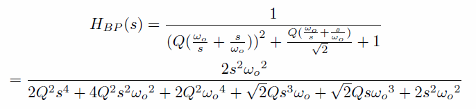
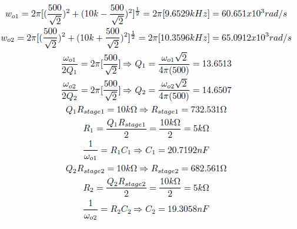
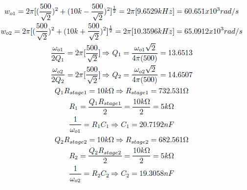
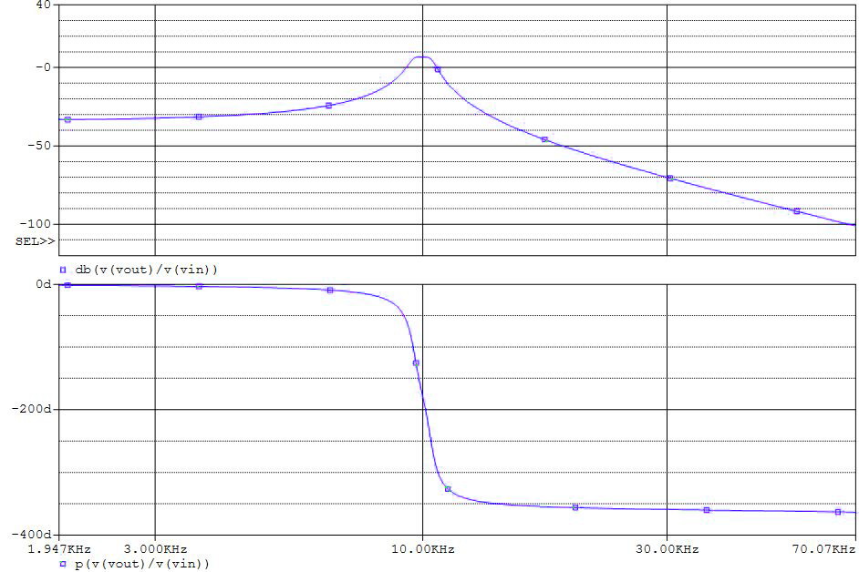
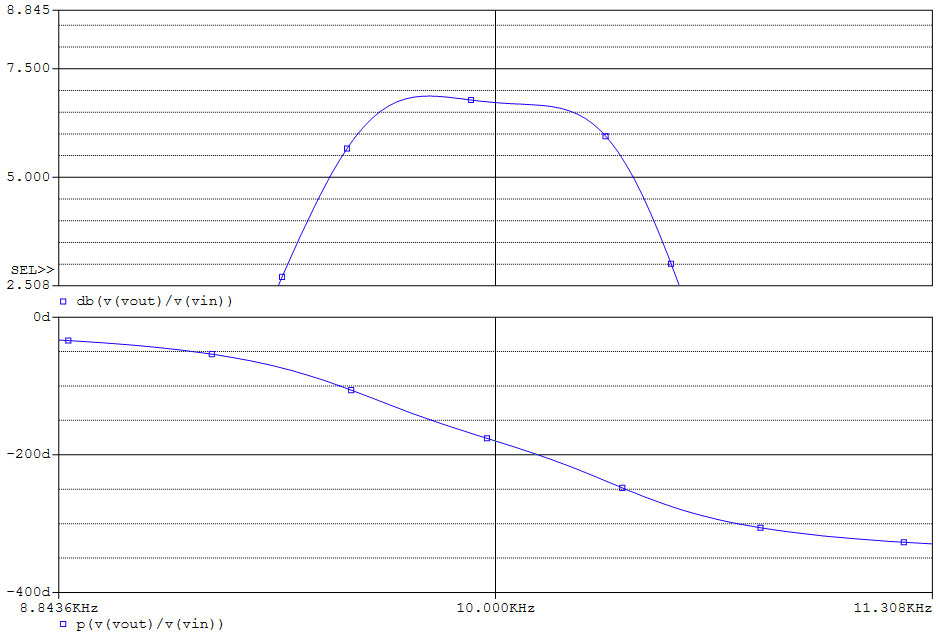
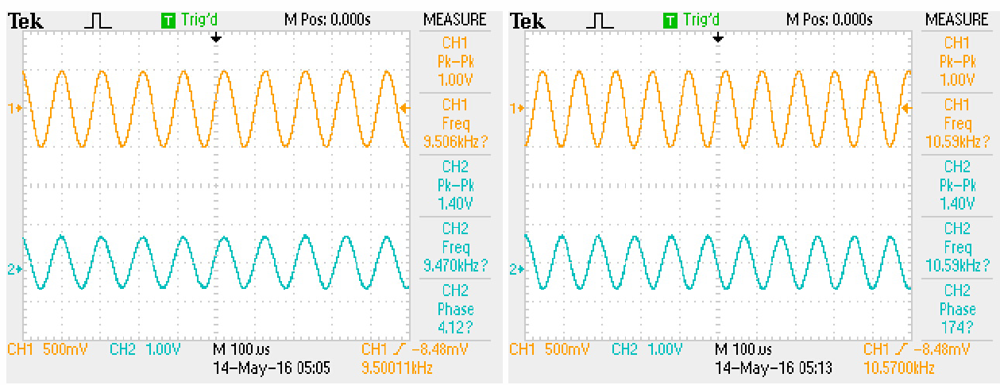

Switched-Capacitor Filter
A 4th-order, maximally flat, biquad, switched-capacitor bandpass filter.
Concept and Background:
The concept behind this project was the design of a 4th order, maximally-flat, biquad, switched capacitor filter. To make the filter maximally-flat, the filter was modelled after a cascade of two biquad Butterworth transfer functions. The bandpass functionality is created by shifting the low-pass filter's frequency to the desired cutoff frequency.
Equivalent Circuit:
Switched Capacitor Filter:
The switched capacitor filter functions as a discrete time filter for an analog input. By switching charge in and out of capacitors, the filter can be made to model a filter with continuous-time RC components. This works because the charge on the capacitor is q = CV and the charge is transferred at a rate of f, where f is the switching frequency, I = qf, the switched capacitor can be modelled as a resistor where R = V/I = (q/C)/(qf) = 1/(Cf). The advantage to a switched capacitor filter is that it can virtually eliminate the component tolerances found in passive components, increasing the accuracy of the filter.
Maximally-flat Filter:
The derivation of the 2nd-order, low-pass Butterworth filter can be seen in the project description Butterworth Filter.
Derivation of 4th-order, maximally-flat, bandpass filter:
Starting with the maximally-flat 2nd-order low-pass filter:  Transforming it with a LP-BP transformation s → Q(ωo/s + s/ωo) gives the 4th-order band-pass transfer function: 
Conversion to biquad, switched-capacitor filters:
The 4th-order band-pass transfer function can be converted into a cascade of biquad transfer functions
H1(s) and H2(s).
 For fo = 10kHz, Q = 10, and G = 6dB, we can determine the bandwidth to be BW = fo/Q
= 1kHz and ωk to be BW/2 = (2π)(500Hz). The properties of our biquad filters can be calculated as follows:

For fo = 10kHz, Q = 10, and G = 6dB, we can determine the bandwidth to be BW = fo/Q
= 1kHz and ωk to be BW/2 = (2π)(500Hz). The properties of our biquad filters can be calculated as follows:

Simulated Bode Plot:
The equivalent circuit diagram was simulated in PSPICE and produced the following bodes plot:  
Measurement:
The circuit was built with the MF10 switched capacitor active filter building block and produced the following result:  which shows the -3dB cut-off at 9.506kHz and 10.59kHz.